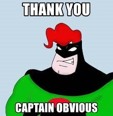

Lesson Twenty-Nine - –£—Ä–æ–∫ 29
–ê–≤—Ç–æ—Ä: –°–µ—Ä–≥–µ–π –õ–∏—Å
–£—Å–ª–æ–≤–Ω—ã–µ –ø—Ä–µ–¥–ª–æ–∂–µ–Ω–∏—è 0-–≥–æ —Ç–∏–ø–∞ (Zero Conditional)
–í –∞–Ω–≥–ª–∏–π—Å–∫–æ–º —è–∑—ã–∫–µ —á–∞—Å—Ç–æ –º–æ–∂–Ω–æ –≤—Å—Ç—Ä–µ—Ç–∏—Ç—å –ø—Ä–µ–¥–ª–æ–∂–µ–Ω–∏—è, –Ω–∞—á–∏–Ω–∞—é—â–∏–µ—Å—è —Å–æ —Å–ª–æ–≤–∞ ‚Äòif‚Äô –µ—Å–ª–∏. –¢–∞–∫–∏–µ –ø—Ä–µ–¥–ª–æ–∂–µ–Ω–∏—è –∑–∞–¥–∞—é—Ç —É—Å–ª–æ–≤–∏—è –¥–ª—è —Å–æ–≤–µ—Ä—à–µ–Ω–∏—è —á–µ–≥–æ-–ª–∏–±–æ –∏ –ø–æ—ç—Ç–æ–º—É –Ω–∞–∑—ã–≤–∞—é—Ç—Å—è —É—Å–ª–æ–≤–Ω—ã–º–∏. –í —ç—Ç–æ–º —É—Ä–æ–∫–µ –º—ã —Ä–∞—Å—Å–º–æ—Ç—Ä–∏–º —Å–∞–º—ã–π –ø—Ä–æ—Å—Ç–æ–π —Ç–∏–ø —É—Å–ª–æ–≤–Ω—ã—Ö –ø—Ä–µ–¥–ª–æ–∂–µ–Ω–∏–π: –Ω—É–ª–µ–≤–æ–π (Zero Conditional /k…ôn'd…™ É(…ô)n(…ô)l/). –¶–∏—Ñ—Ä–∞ 0 –µ–º—É –¥–∞–Ω–∞ –ø–æ—Ç–æ–º—É, —á—Ç–æ –∫–∞–∫ —Ç–∞–∫–æ–≤—ã—Ö —É—Å–ª–æ–≤–∏–π –æ–Ω –Ω–µ –∑–∞–¥–∞—ë—Ç, –æ–Ω –ø–æ–∫–∞–∑—ã–≤–∞–µ—Ç –æ–±—â–∏–µ –∏—Å—Ç–∏–Ω—ã, –æ–±—ã—á–∞–∏, —Ç—Ä–∞–¥–∏—Ü–∏–∏, –ø—Ä–∏–≤—ã—á–∫–∏ –∏ –¥—Ä., –∫–æ–≥–¥–∞ —Ä–µ–∑—É–ª—å—Ç–∞—Ç –≤—Å–µ–≥–¥–∞ –ø—Ä–æ–∏—Å—Ö–æ–¥–∏—Ç (—Ñ–∞–∫—Ç). For example:
If you add two and two, you get four. – Если вы сложите дважды два, то получите четыре.
If people eat too much, they get fat. – Если люди слишком много едят, они толстеют (досл.: становятся толстыми).
Babies cry if they are hungry. – Младенцы плачут, если голодны.
Напоминаю, что ‘get + прилагательное / причастие II’ означает ‘становиться, делаться’ (урок 8).
–û–±—Ä–∞—Ç–∏—Ç–µ –≤–Ω–∏–º–∞–Ω–∏–µ –Ω–∞ —Å–ª–µ–¥—É—é—â–µ–µ:
- –û–±–µ —á–∞—Å—Ç–∏ —É—Å–ª–æ–≤–Ω–æ–≥–æ –ø—Ä–µ–¥–ª–æ–∂–µ–Ω–∏—è –Ω—É–ª–µ–≤–æ–≥–æ —Ç–∏–ø–∞ –≤—ã—Ä–∞–∂–µ–Ω—ã –≤ –Ω–∞—Å—Ç–æ—è—â–µ–º –≤—Ä–µ–º–µ–Ω–∏. –ß–∞—Å—Ç–æ —ç—Ç–æ Present Simple, –Ω–æ —Ç–∞–∫–∂–µ –º–æ–∂–µ—Ç –±—ã—Ç—å –∏ Present Continuous.
- В условных предложениях нулевого типа вместо слова ‘if’ часто можно поставить слово ‘when’, и смысл не изменится. С ‘when’ действуют все те же правила, что и с ‘if’.
- Если первая часть предложения начинается с ‘if’, то по её завершении ставится запятая. В обратном случае запятая не ставится. Это относится и к другим типам условных предложений.
–í–æ—Ç –µ—â—ë –ø—Ä–∏–º–µ—Ä—ã —Å —Å–æ–ª–Ω—ã—à–∫–æ–º –∏ –≤–æ–¥–∏—á–∫–æ–π:
It is cold if the sun doesn’t shine. – Холодно, если солнце не светит.
If the sun shines, the weather is fine. – Если солнце светит, погода ясная.
If water reaches 100 degrees, it boils. – Если вода достигает 100 градусов, она кипит.
If you heat water to 100 degrees, it boils. – Если подогреть воду до 100 градусов, она (за)кипит.
Water freezes if the temperature falls below zero. – Вода замерзает, если температура падает ниже нуля.
If ice melts, it becomes water. – Если лёд тает, он становится водой.
If you get into the water, you get wet. – Если вы попадёте в воду, вы станете мокрыми.
–í –æ–±—â–µ–º, —á–∞—Å—Ç—å –ø—Ä–µ–¥–ª–æ–∂–µ–Ω–∏–π –ø–æ—Ö–æ–¥—è—Ç –Ω–∞ –º—ã—Å–ª–∏ –∫–∞–ø–∏—Ç–∞–Ω–∞ –û—á–µ–≤–∏–¥–Ω–æ—Å—Ç—å ")

–ó–∞–ø–æ–º–Ω–∏—Ç–µ –µ—â—ë –Ω–µ—Å–∫–æ–ª—å–∫–æ –Ω–µ–ø—Ä–∞–≤–∏–ª—å–Ω—ã—Ö –≥–ª–∞–≥–æ–ª–æ–≤:
| –ò–Ω—Ñ–∏–Ω–∏—Ç–∏–≤ | –ü—Ä–æ—à–µ–¥—à–µ–µ | –ü—Ä–∏—á–∞—Å—Ç–∏–µ II | –ü–µ—Ä–µ–≤–æ–¥ |
| become | became | become | —Å—Ç–∞–Ω–æ–≤–∏—Ç—å—Å—è |
| fall | fell | fallen | –ø–∞–¥–∞—Ç—å |
| freeze | froze | frozen | –∑–∞–º–µ—Ä–∑–∞—Ç—å |
| shed * | shed | shed | –ª–∏—Ç—å (—Å–ª—ë–∑—ã) |
Уже можно переходить к диалогу. По смыслу он будет опережать следующие два, просто нужно было либо диалоги по порядку, либо грамматические темы по порядку... Слов в уроке чуть больше обычного, но их почти все нужно знать, а такие слова как ‘метафора’ (metaphor) хоть и используются редко, но запомнить-то их не сложно, они и пишутся, и звучат почти как на русском, поэтому ничего не смог поделать, учите. Те, что посложнее или реже используются, вынес в дополнительный словарь (всего 5 получилось, в т.ч. shed выше).

— So, it’s been a long strange trip, hasn’t it?
— Yes, it has. Y’know1, you should play the hero more often, it suits you.
— Nah... Tell me something, Nate.
— What?
— Do you love her?
— Chloe, I’m sorry, I...
— No, it’s fine. Really, it’s all right. Just do yourself a favor, cowboy2. Tell her.

N: — Well, look who’s not supposed3 to be out of bed.
S: — Yeah, she’s a lousy patient. Stubborn as all hell.
E: — I’m not stubborn, I’m just restless4.
S: — So, no giant sapphire.
N: — Once again, no.
S: — And you’re sure of that?
E: — Yes.
N: — Just a metaphor, I’m afraid.
S: — A metaphor ain’t5 gonna pay your bills, kid.
N: — Eh, something else will come along6. Just gotta have faith.
— So, where do we go from here7, huh?
— I don’t know... I haven’t thought that far ahead.
— Of course not. But then again, neither have I.
— Good.
— So, on a scale of one to ten... how scared were you that I was gonna die?
— Four.
— Four?!
— Yeah, why?
— A four?
— Yeah.
— You were at least an eight.
— An eight?
— You were a total eight.
— An eight? Those guardian things were an eight.
— Are you kidding me?
— Yeah, those were terrifying.
— Then what’s a ten?
— Clowns.
— Clowns over my death?
— I, I hate clowns.
— Clowns.
— I hate clowns.
— Oh my word8. You thought I was dead.
— No...
— No, you thought I was gone.
— No...
— Yes, you did.
— No, I had you all along.
— I saw you shed tears. You shed a bunch of ‘em.
— Tears?
— Um-hmm.
— It was raining.
— No, it was not.
— You were unconscious and it was raining.
— It was totally sunny out and you were bawling.
— It wasn’t sunny and you were unconscious.
— Whatever9, I kept your tears in a jar. I have proof.
— I’ll give you a five, how’s that?
Notes:
- ‘y’know’ = ‘you know’
- ‚Äòcowboy‚Äô /'ka äb…î…™/: –∫–æ–≤–±–æ–π. –ò–Ω—Ç–µ—Ä–µ—Å–Ω–æ, —á—Ç–æ –¥–æ —Ç–æ–≥–æ, –∫–∞–∫ –ø–æ—è–≤–∏–ª–∏—Å—å –≤–µ—Å—Ç–µ—Ä–Ω—ã –∏ —Å–ª–æ–≤–æ —Å—Ç–∞–ª–æ –ø–æ–ø—É–ª—è—Ä–Ω—ã–º, –≤ –∞–º–µ—Ä–∏–∫–∞–Ω—Å–∫–æ–º –∞–Ω–≥–ª–∏–π—Å–∫–æ–º –±—ã–ª–æ –µ—â—ë –∑–Ω–∞—á–µ–Ω–∏–µ ‚Äò–ø–∞—Å—Ç—É—Ö‚Äô, –∞ ‚Äòcowboy‚Äô —Å–æ—Å—Ç–æ–∏—Ç –∏–∑ –¥–≤—É—Ö —Å–ª–æ–≤: ‚Äòcow‚Äô –∫–æ—Ä–æ–≤–∞ + ‚Äòboy‚Äô –º–∞–ª—å—á–∏–∫.
- ‘be not supposed to’: не разрешается или не рекомендуется (делать что-либо) (досл.: предполагается не делать, т.е. не положено).
- ‘restless’: беспокойный, неугомонный. Обратите внимание на суффикс ‘-less’, он указывает на отсутствие чего-либо, в данном случае ‘отдыха, покоя’ (rest).
- ain’t = am not, are not, is not, have not и has not. Можно использовать только в разговорной речи. Но пока английский язык не стал для вас вторым языком, старайтесь его не использовать.
- ‘come along’: сопровождать кого-либо / идти с кем-либо – это прямое значение фразы. Другим значением, для данного случая, является: появиться, прибыть случайно. Обратите внимание на новый предлог ‘along’ вдоль, по; во время. I was walking along the street. Я шёл по улице.
- ‘where do we go from here?’: куда мы отправимся отсюда? Данное выражение несёт не дословный смысл, а предполагает: какое наилучшее развитие событий, учитывая текущую ситуацию или положение вещей? (какие варианты остались или доступны?) А также, если задают этот вопрос, спрашивают что делать дальше, обычно потому, что проблема была решена не надлежащим образом. В данном случае речь идёт об отношениях Нейта и Елены. Под комментариями факультативный бонус на эту тему в виде кусочка из песни: Ruelle – Where Do We Go From Here.
- ‘Oh my word’: выражает удивление. Выражение предположительно появилось из фразы ‘Oh my God!’, но, чтобы не обидеть Бога или религиозных людей, было видоизменено.
- ‘whatever’ /wɔt'evə/: неважно. Разговорное слово. В более грубых ситуациях может означать: мне всё равно. Это при условии, что оно обособлено и не связано с другими словами, иначе могут быть другие значения, например: Whatever he says, they won’t believe him. – Они не поверят ему, что бы он ни говорил. Take whatever you want. – Возьмите всё, что хотите.
–°–ª–æ–≤–∞—Ä—å
add /æd/ 1) добавлять; 2) складывать
baby /'be…™b…™/ —Ä–µ–±—ë–Ω–æ–∫, –º–ª–∞–¥–µ–Ω–µ—Ü
become /b…™'k åm/ —Å—Ç–∞–Ω–æ–≤–∏—Ç—å—Å—è; –ø—Ä–æ—à. –≤—Ä. became /b…™'ke…™m/; –ø—Ä–∏—á. II become /b…™'k åm/
bill /b…™l/ —Å—á—ë—Ç
boil /b…î…™l/ 1) –∫–∏–ø—è—Ç–∏—Ç—å; –∫–∏–ø–µ—Ç—å; 2) –≤–∞—Ä–∏—Ç—å
bunch /b ån ß/ –ø—É—á–æ–∫; –ø–∞—á–∫–∞; –≥—Ä–æ–∑–¥—å; –∫—É—á–∞
clown /kla än/ –∫–ª–æ—É–Ω
come along 1) —Å–æ–ø—Ä–æ–≤–æ–∂–¥–∞—Ç—å –∫–æ–≥–æ-–ª. / –∏–¥—Ç–∏ —Å –∫–µ–º-–ª.; 2) –ø–æ—è–≤–∏—Ç—å—Å—è, –ø—Ä–∏–±—ã—Ç—å —Å–ª—É—á–∞–π–Ω–æ
cow /ka ä/ –∫–æ—Ä–æ–≤–∞; cowboy /'ka äb…î…™/ –∫–æ–≤–±–æ–π
dead /ded/ –º—ë—Ä—Ç–≤—ã–π; —É–º–µ—Ä—à–∏–π
death /deθ/ смерть
degree /d…™'griÀê/ 1) –≥—Ä–∞–¥—É—Å; 2) —Å—Ç–µ–ø–µ–Ω—å
faith /feɪθ/ вера
fall /fɔːl/ падать; прош. вр. fell /fel/; прич. II fallen /'fɔːlən/
fat /fæt/ adj. толстый; жирный; n. жир
favor /'fe…™v…ô/ –∞–º–µ—Ä. = favour –±—Ä–∏—Ç. —É—Å–ª—É–≥–∞, –æ–¥–æ–ª–∂–µ–Ω–∏–µ
freeze /friÀêz/ –∑–∞–º–µ—Ä–∑–∞—Ç—å; –ø—Ä–æ—à. –≤—Ä. froze /fr…ô äz/; –ø—Ä–∏—á. II frozen /'fr…ô äz(…ô)n/
giant /' §a…™…ônt/ n. –≥–∏–≥–∞–Ω—Ç; adj. –≥–∏–≥–∞–Ω—Ç—Å–∫–∏–π
heat /hiÀêt/ 1) v. –Ω–∞–≥—Ä–µ–≤–∞—Ç—å(—Å—è); —Ä–∞–∑–æ–≥—Ä–µ–≤–∞—Ç—å(—Å—è); 2) n. –∂–∞—Ä–∞
hero /'h…™…ôr…ô ä/ –≥–µ—Ä–æ–π
hungry /'h å≈ãgr…™/ –≥–æ–ª–æ–¥–Ω—ã–π
melt /melt/ —Ç–∞—è—Ç—å
metaphor /'metəfə, -fɔː/ метафора
neither /'na…™√∞…ô/ adv. —Ç–∞–∫–∂–µ –Ω–µ, —Ç–æ–∂–µ –Ω–µ
patient /'pe…™ É(…ô)nt/ –ø–∞—Ü–∏–µ–Ω—Ç, –±–æ–ª—å–Ω–æ–π
proof /pruÀêf/ –ø–æ–¥—Ç–≤–µ—Ä–∂–¥–µ–Ω–∏–µ, –¥–æ–∫–∞–∑–∞—Ç–µ–ª—å—Å—Ç–≤–æ
reach /riÀê ß/ 1) –¥–æ—Ç—è–≥–∏–≤–∞—Ç—å—Å—è, —Ç—è–Ω—É—Ç—å—Å—è (–∫ —á–µ–º—É-–ª.); 2) –ø—Ä–æ—Ç—è–≥–∏–≤–∞–Ω–∏–µ (—Ä—É–∫–∏); 3) –¥–æ—Å—Ç–∏–≥–∞—Ç—å, –¥–æ—Ö–æ–¥–∏—Ç—å
sapphire /'sæfaɪə/ сапфир
scale /ske…™l/ —à–∫–∞–ª–∞
scare /ske…ô/ –ø—É–≥–∞—Ç—å; –∏—Å–ø—É–≥–∞—Ç—å, –Ω–∞–ø—É–≥–∞—Ç—å
shine / Éa…™n/ —Å–≤–µ—Ç–∏—Ç—å
sorry /'s…îr…™/ adj. —Å–æ–∂–∞–ª–µ—é—â–∏–π
stubborn /'st åb…ôn/ —É–ø—Ä—è–º—ã–π
suit /s(j)uÀêt/ v. –ø–æ–¥—Ö–æ–¥–∏—Ç—å; n. –∫–æ—Å—Ç—é–º
sunny /'s ån…™/ —Å–æ–ª–Ω–µ—á–Ω—ã–π
tear /t…™…ô/ —Å–ª–µ–∑–∞
temperature /'temp(…ô)r…ô ß…ô/ —Ç–µ–º–ø–µ—Ä–∞—Ç—É—Ä–∞
terrify /'ter…ôfa…™, -r…™-/ —É–∂–∞—Å–∞—Ç—å; –≤–Ω—É—à–∞—Ç—å –∏–ª–∏ –≤—Å–µ–ª—è—Ç—å —É–∂–∞—Å
total /'t…ô ät…ôl/ 1) –≤–µ—Å—å, —Ü–µ–ª—ã–π; –æ–±—â–∏–π, —Å–æ–≤–æ–∫—É–ø–Ω—ã–π, —Å—É–º–º–∞—Ä–Ω—ã–π; 2) –∞–±—Å–æ–ª—é—Ç–Ω—ã–π, –ø–æ–ª–Ω—ã–π, —Å–æ–≤–µ—Ä—à–µ–Ω–Ω—ã–π
totally /'t…ô ät…ôl…™/ –ø–æ–ª–Ω–æ—Å—Ç—å—é; —Å–æ–≤–µ—Ä—à–µ–Ω–Ω–æ
unconscious / ån'k…în(t) É…ôs/ –±–µ–∑ —Å–æ–∑–Ω–∞–Ω–∏—è, –≤ –æ–±–º–æ—Ä–æ–∫–µ
weather /'we√∞…ô/ –ø–æ–≥–æ–¥–∞
wet /wet/ –º–æ–∫—Ä—ã–π, –≤–ª–∞–∂–Ω—ã–π
whatever /w…ît'ev…ô/ –Ω–µ–≤–∞–∂–Ω–æ
–î–æ–ø–æ–ª–Ω–∏—Ç–µ–ª—å–Ω—ã–µ —Å–ª–æ–≤–∞:
else /els/ adv. –¥—Ä—É–≥–æ–π (—É—Ä–æ–∫ 44)
guardian /'gɑːdɪən/ страж
lousy /'la äz…™/ –æ—Ç–≤—Ä–∞—Ç–∏—Ç–µ–ª—å–Ω—ã–π; –ø–∞—Ä—à–∏–≤—ã–π
shed / Éed/ –ø—Ä–æ–ª–∏–≤–∞—Ç—å, –ª–∏—Ç—å (—Å–ª—ë–∑—ã, –∫—Ä–æ–≤—å); –ø—Ä–æ—à. –≤—Ä. shed; –ø—Ä–∏—á. II shed
–£–ø—Ä–∞–∂–Ω–µ–Ω–∏—è
–£–ø—Ä–∞–∂–Ω–µ–Ω–∏–µ 1. –ü–µ—Ä–µ–≤–µ–¥–∏—Ç–µ —Å –∞–Ω–≥–ª–∏–π—Å–∫–æ–≥–æ –Ω–∞ —Ä—É—Å—Å–∫–∏–π.
- I like to ride my bicycle if the weather is fine.
- Everybody gets serious if it rains a lot.
- If I drink a glass of milk before I go to bed, I sleep well.
- The river freezes if it is very cold.
- If I speak to Victor, he gets so sweet.
- When he goes on a trip, he always takes a lot of food with him.
- If your phone isn’t working, you cannot hear what he’s saying.
- If I wake up late, I’m late for work.
- If you don’t put on your clothes, you get cold.
- If John has a party, lots of people come.
- The car stops by itself if something goes wrong.
- If there are only a few students, we usually finish our lessons earlier.

–£–ø—Ä–∞–∂–Ω–µ–Ω–∏–µ 2. –ü–µ—Ä–µ–≤–µ–¥–∏—Ç–µ —Å —Ä—É—Å—Å–∫–æ–≥–æ –Ω–∞ –∞–Ω–≥–ª–∏–π—Å–∫–∏–π.
- –Ø —á—É–≤—Å—Ç–≤—É—é —Å–µ–±—è —Ö–æ—Ä–æ—à–æ –Ω–∞ —Å–ª–µ–¥—É—é—â–∏–π –¥–µ–Ω—å, –µ—Å–ª–∏ –ª–æ–∂—É—Å—å —Å–ø–∞—Ç—å —Ä–∞–Ω–æ.
- –ï—Å–ª–∏ —è –µ–º, —è –≥–æ–≤–æ—Ä—é –Ω–µ –æ—á–µ–Ω—å —Ö–æ—Ä–æ—à–æ.
- –û–Ω–∏ –ø–ª–∞—á—É—Ç, –µ—Å–ª–∏ –æ–Ω–∏ –Ω–∞–ø—É–≥–∞–Ω—ã.
- –ï—Å–ª–∏ —è –æ–ø–∞–∑–¥—ã–≤–∞—é –Ω–∞ —Ä–∞–±–æ—Ç—É, –≤—Å–µ —Å—Ç–∞–Ω–æ–≤—è—Ç—Å—è —Å–µ—Ä–¥–∏—Ç—ã–º–∏.
- –ï—Å–ª–∏ –∏–¥—ë—Ç –¥–æ–∂–¥—å, —Ç—Ä–∞–≤–∞ —Å—Ç–∞–Ω–æ–≤–∏—Ç—Å—è –º–æ–∫—Ä–æ–π.
- –ï—Å–ª–∏ –ï–ª–µ–Ω–∞ –Ω–µ –Ω–æ—Å–∏—Ç —à–∞–ø–∫—É, –æ–Ω–∞ –º—ë—Ä–∑–Ω–µ—Ç.
- –ï—Å–ª–∏ –≤—ã –Ω–∞–≥—Ä–µ–≤–∞–µ—Ç–µ –ª—ë–¥, –æ–Ω —Ç–∞–µ—Ç.
- –ï—Å–ª–∏ –ª—é–¥–∏ –µ–¥—è—Ç —Å–ª–∏—à–∫–æ–º –º–Ω–æ–≥–æ —à–æ–∫–æ–ª–∞–¥–∞, –æ–Ω–∏ —Å—Ç–∞–Ω–æ–≤—è—Ç—Å—è —Ç–æ–ª—Å—Ç—ã–º–∏.
- –õ—é–¥–∏ —É–º–∏—Ä–∞—é—Ç, –µ—Å–ª–∏ –Ω–µ –µ–¥—è—Ç.
- –ï—Å–ª–∏ –æ–Ω —Å–µ—Ä–¥–∏—Ç, –µ–≥–æ –ª–∏—Ü–æ (face) –≤—Å–µ–≥–¥–∞ —Å—Ç–∞–Ω–æ–≤–∏—Ç—Å—è –∫—Ä–∞—Å–Ω—ã–º.
- –ú–Ω–µ –Ω—Ä–∞–≤–∏—Ç—Å—è –ø–æ—Å–µ—â–∞—Ç—å –∏–Ω—Ç–µ—Ä–µ—Å–Ω—ã–µ –º–µ—Å—Ç–∞, –µ—Å–ª–∏ —è –≤ –Ω–æ–≤–æ–º –≥–æ—Ä–æ–¥–µ.
- –ï—Å–ª–∏ –º–æ–π –º—É–∂ –≥–æ—Ç–æ–≤–∏—Ç, –≤—Å–µ –ø—ã—Ç–∞—é—Ç—Å—è –ø–æ—Å—Ç–∞–≤–∏—Ç—å –∏—Ö —Å–æ–±—Å—Ç–≤–µ–Ω–Ω—É—é –µ–¥—É –Ω–∞ —Å—Ç–æ–ª.
–ö—É—Ä—Å –¥–æ—Å—Ç—É–ø–µ–Ω –≤ –≤–∏–¥–µ –ø—Ä–∏–ª–æ–∂–µ–Ω–∏—è –Ω–∞ iOS –∏ –∞–Ω–¥—Ä–æ–∏–¥ (–ø–æ–¥—Ä–æ–±–Ω–µ–µ –≤ —É—Ä–æ–∫–µ 1):